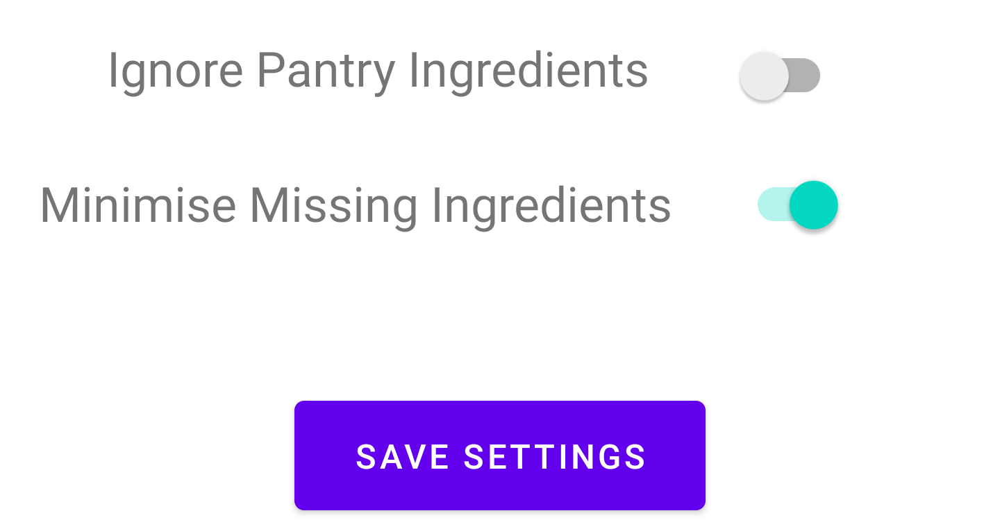

Settings Guide
Opening the settings page:
To open the settings page, either click on the three-dot icon on the right of the app bar and click "Settings" or open the navigation drawer and select "Settings".
Using the settings page:
To use the settings page, toggle your desired setting on or off. To save your settings, click "Save Settings".
What does "Ignore Pantry Ingredients" mean?
Pantry ingredients include common ingredients such as sugar, flour and water - so turning this setting on means that the app will assume you have these ingredients.
What does "Minimise Missing Ingredients" mean?
Turning this setting on will optimise your recipe search so that recipes will include as few missing ingredients as possible.
Turning this setting off will optimise your recipe search so that recipes will include as many of the ingredients that you have entered as possible.
